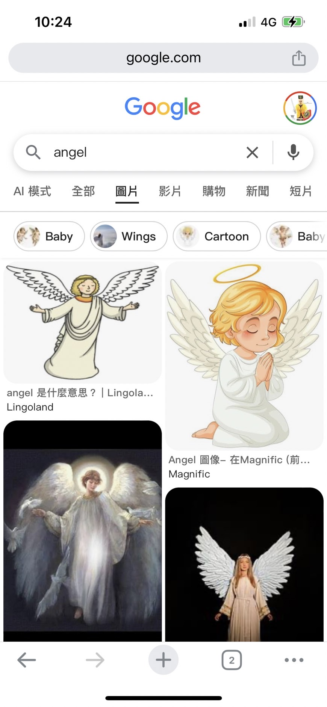
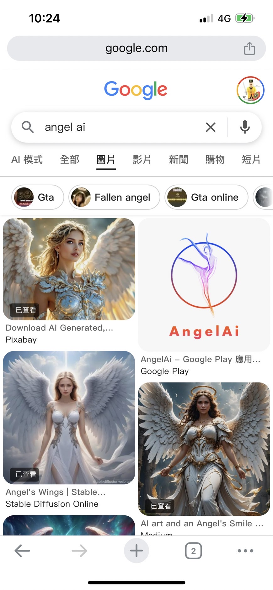
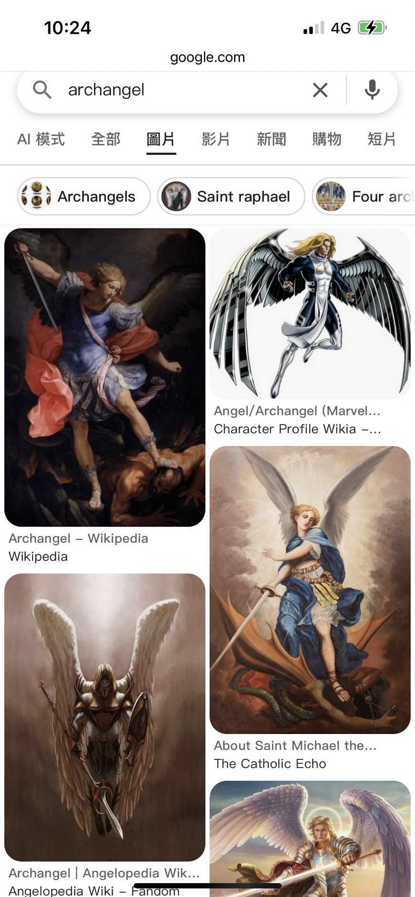
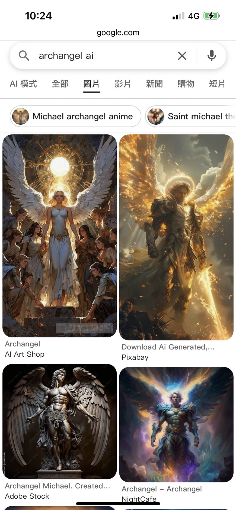
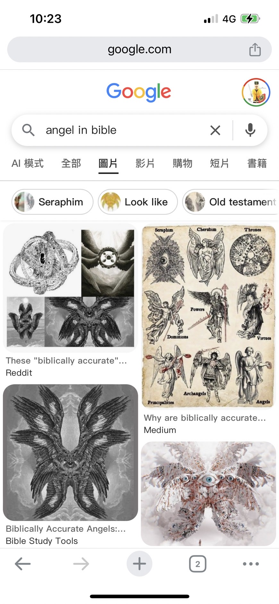
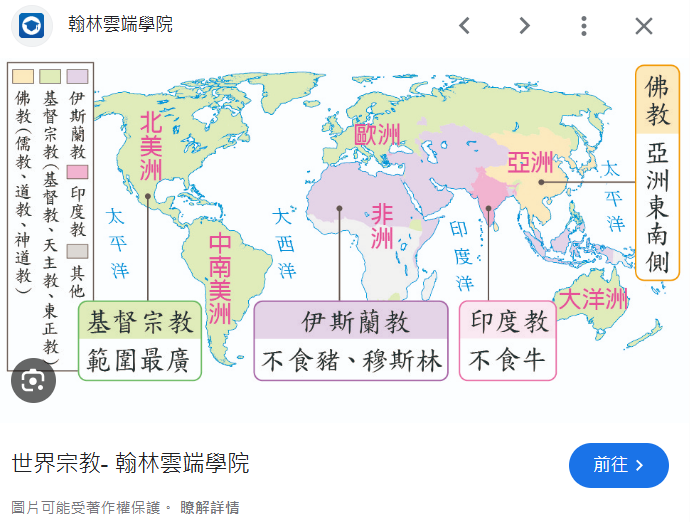

點擊上方的語言選單以切換語言
ANGEL MORPHOLOGY & GENETIC AUDIT SYSTEM
⚖️ 專案開發者聲明：邏輯一致性審核
本專案並非針對任何特定的宗教或群體，而是針對所有「缺乏物理實相支撐」與「邏輯不通」的信仰系統進行解構。
身為開發者，我們深知一套系統若底層邏輯混亂，無論介面（儀式）多麼華麗，最終都將導致運行錯誤。本專案的宗旨如下：
- 無差別審計： 無論是西方的亞伯拉罕諸教、印度的因果業力、歐洲的原始德魯伊，或是東方的神祕主義，皆平等接受科學與邏輯的 Debug。
- 拒絕迷信誤導： 迷信本質上是古代樣本在資訊貧乏下所編寫的「邏輯補丁」。在現代科學與腦神經科學已高度發展的今天，繼續沿用這些過時、甚至有害的「舊版代碼」，只會阻礙人類對真實世界的認知。
- 回歸物理實相： 我們尊重文學美感與心理撫慰價值，但堅決捍衛「事實歸事實，信仰歸信仰」的界線。不要讓數千年前的資訊謬誤，鎖死了你大腦的運算資源。
「本專案不提供心靈寄託，只提供實相數據。請保持理性，拒絕被任何未經校驗的迷信系統所誤導。」
目錄
隨便點選下方其中一個主題便能直接跳到該主題的說明區第一章：數位演算法偏見與「特攝片機器人」原始碼
【觀測報錯：數據庫的自動加權預載】
在現代搜尋引擎或 AI 繪圖工具中輸入 archangel、angel ai、angel 等字眼時，即便**完全不指定任何外觀特徵**，產出結果依舊由具有高度一致性的**「歐洲白人外型 + 白色羽翼」**類人生物佔據絕大比例。
這種現象在系統工程中被稱為**「刻板印象自動加權（Default Weighting）」**。由於西方文藝復興時期的古典繪畫與近代好萊塢影視在網路上留下了壓倒性的數據樣本，導致演算法在進行渲染時，直接將「北歐日耳曼人特徵」當作預設的**「預載包（Default Package）」**強制輸出。
在 2005 年電影《康斯坦丁》（Constantine）中，大天使加百列（Gabriel）被渲染為由蒂妲·史雲頓（Tilda Swinton）飾演、留著淺金短髮的高加索白人中性外型。這是一次極其成功的**「前端介面改造（UI Refactoring）」**。系統為了防止大眾因直面底層不可名狀的幾何造物而發生認知崩潰（System Crash），刻意採用了文藝復興時期的羅馬神話補丁，將在舊約文本中動輒「一晚物理抹除18萬大軍」的頂級戰術武力程序，精確馴化為安全、優雅且毫無威脅性的視覺玩偶。
【原始碼校驗：被過度美化的古代重型載具】
只有當輸入 angel in Bible 時，底層冷門數據庫才會被調出。原始文本描述的高階天使，與其說是恐怖，倒不如說是古代人在缺乏現代科技詞彙的情況下，對**「高科技飛行載具」**與**「特攝片/超級戰隊合體機器人」**的物理描述：
- 智天使 (Cherubim) —— 特攝合體結構： 具備四個頭（人頭=最高控制系統、獅頭=荒野攻擊力、牛頭=物理續航力、鷹頭=高空雷達觀測），全身與翅膀上佈滿了觀測眼。這與超級戰隊將不同領域的最強機械獸組裝成「全地形作戰機器人」的合體邏輯完全一致。
- 座天使 (Ophanim) —— 陀螺儀推進器： 一個圈套著一個圈的巨型金屬輪子，在空中發光、高速旋轉、輪緣長滿眼睛。這在現代工程學中，對標的就是帶有全域光學雷達（LiDAR）的**陀螺儀動力推進器（Gyroscope Thruster）**。
【形態特徵多維度矩陣對比雷達圖】





第二章：地理遺傳學審計與「西方神話」的命名空間衝突
1. 遺傳代碼校準：被歐洲主機強行編譯的近東沙盤
退一萬步而言，即便在前端畫面上完全妥協，接受流行文化中天使的「類人生物」設定，其外觀也存在嚴重的**遺傳學逆轉 Bug**。
基督教起源於**古代近東（Ancient Near East）**，根本不是歐洲本土的產物。根據歷史地理學與遺傳學數據，當時黎凡特扇區（Levant Sector）的常駐人口特徵為：**黑髮、黑眼/深棕眼、麥色皮膚**。現代大數據無意識渲染出的「金髮碧眼白皮膚」日耳曼人（Germanic）外型，在黎凡特的原始原始碼中完全屬於「非法數據輸入」。
2. 網絡博主的語意錯誤：伊甸園與歐式奇幻的硬體斷裂
許多講解文化的網路博主，常將「亞當與夏娃」直接封裝為「西方神話的人類始祖」，這在文化分類學上是嚴重的**命名空間衝突（Namespace Conflict）**：
- 多元的西方原生系統： 「西方」並非由單一基督教文本壟換，其本土具備獨立的原生系統：希臘神話、羅馬神話、凱爾特神話、北歐神話、斯拉夫神話等。這些原生多神教協議，與聖經的獨一主機架構完全不相容。
- 近東綠洲生態學： 亞當與夏娃嚴格來說並不屬於西方文化，而是屬於近東文化。文本中所描述的「伊甸園」，其氣候、植被與地理水系（底格里斯河與幼發拉底河），皆屬於典型的**近東半乾旱與肥沃月彎生態**，與中世紀歐式奇幻（如北歐神話）中幽暗、潮濕、針葉林密佈的歐洲森林有著本質上的硬體差異。
如果調閱尚未被近代北歐/北美流行文化徹底洗滌的古老宗教藝術作品（如早期拜占庭鑲嵌畫、埃及科普特教會壁畫），會發現最原始的數據殘留：畫作中的亞當與夏娃，其皮膚並非雪白，而是健康的**麥色（Olive skin）**，頭髮與眼睛皆呈現**黑色與深棕色**。這證明早期協定在進行介面渲染時，都清楚知道核心原始碼源自近東。
第三章：歐化外掛補丁與「吸血鬼戰線」的形態分流
1. 東亞流行文化的介面觀察：林正英的「洋廟」論
東亞文化在接觸這套系統時，透過日常經驗留下了非常直覺的 UI 命名。例如在經典殭屍片《驅魔道長》中，林正英飾演的道士與午馬飾演的神父合力抗敵時，高喊「中西合璧，天下無敵！」，那句「中西合璧」暗指基督教就是西方人的東西；在另一部電影《一眉道人》中，樓南光飾演的保安隊長甚至直白地將「教堂」稱為「洋廟」，直譯就是「Western Temple」。
現代人日常接觸到的基督教符號：黑袍神父、修女、銀製十字架、哥德式尖頂教堂、聖水（Holy Water）、手持聖物的吸血鬼獵人、身穿銀色盔甲的聖騎士等，皆籠罩在濃厚的**歐洲中世紀與哥德美學（Gothic Aesthetic）**之中，且地理課本上的基督教分布圖與西方文化區重疊率高達 90%。
然而，上述兩段所描述的情況在系統審計中都屬於**「歐化版本（Westernized Version）」**的二次編譯外掛，與原始文本的近東荒漠環境完全斷裂：
| 環境維度 | 聖經原始代碼 (近東沙盤) | 歐化基督元素 (西方主機) |
|---|---|---|
| 地表地貌 | 沙漠、綠洲、曠野 | 針葉林、幽暗古堡、歐洲本土森林 |
| 植物景觀 | 橄欖樹、橡樹、檉柳、棕櫚樹 | 玫瑰、歐式庭園植物 |
| 建築結構 | 泥磚與生土組成的土黃色方形平頂房 | 大理石、彩色玻璃、高聳的哥德尖頂教堂 |
| 核心儀式 | 血淋淋的牛羊宰殺與焚燒獻祭 (Sacrifice) | 優雅的管風琴、詩班唱頌、精緻的聖餐禮 |
這個斷層完美解釋了一個流行文化矛盾：**金髮碧眼的天使雖常出現在教堂壁畫中，卻幾乎從未出現在「教會與吸血鬼對立」的暗黑奇幻故事裡。** 因為吸血鬼獵人、聖水、銀十字架這整套抗魔生態系，跑的是純粹的「歐洲中世紀哥德補丁」；而金髮天使則是文藝復興的「美化裝飾補丁」。當故事需要展現對抗黑暗的物理威懾力時，美型天使那毫無戰鬥參數的軟性 UI 會直接編譯失敗，系統被迫只能調用十字架等符號。兩套補丁在底層根本無法相容。


第四章：反駁審計與時間線校準 —— 二創代碼的覆蓋率漏洞
【潛在反駁偵測與攔截】
或許有讀者會提出反駁：「網路上『該隱（Cain）』或『猶大（Judas）』作為吸血鬼始祖的設定知名度極高，此二人皆為聖經人物，而天使亦屬聖經元素，憑什麼吸血鬼生態系不能與美型天使同框？」
這種反駁在歷史出版史與人類學上犯了嚴重的**越權引用與時間線拓撲錯誤（Timeline Topology Error）**：
- 發行序號壓制 (Release Date Priority)： 《聖經》原典中完全沒有任何關於該隱或猶大轉化為吸血鬼的文字記載，該設定純屬現代流行文化的二次創作（主要起源於 1991 年的角色扮演遊戲《吸血鬼之避世潛藏 VTM》）。論現實世界的知名度與影響力，他們遠不及生於 15 世紀的瓦拉幾亞大公德古拉。伯蘭·史杜克（Bram Stoker）的經典小說《德古拉》於 **1897 年** 便已出版，其**發行年代遠比「該隱是吸血鬼」這套二創設定的誕生還要提早近一個世紀**。德古拉才是吸血鬼哥德美學的真正硬體奠基者。
- 視覺資產衝突 (Asset Conflict)： 不論是正統宗教藝術史上的描繪，還是現代數位藝術家（如筆名為「非典牧師Sai」等）透過 AI 演算法還原生成的圖像，該隱與猶大的外貌風格，與身穿歐洲黑斗篷、講究貴族禮儀的德古拉存在不可調和的人類學斷裂。該隱是**黃/麥色皮膚、蓄著濃密鬍鬚、面容粗糙、肌肉結實的古代近東農人**；猶大也是一世紀典型的**近東平民裝束**。
強行將該隱/猶大塞入吸血鬼陣營，是用現代的二創濾鏡去強行重寫歷史文本。當把「近東粗獷農人該隱」或「近東平民猶大」和「文藝復興金髮碧眼美型天使」放在同一個畫面裡時，在歷史地理學與人類學面前會產出極大的**視覺違和感與荒謬性**。這再次證實：吸血鬼（15世紀東歐/19世紀英國文學）與美型天使（14世紀文藝復興）在美學底層上，本就是兩套各自獨立且互不相容的「歐洲本土補丁」，任何強行同框的行為皆屬於邏輯崩潰。
第五章：戰力數值審計 —— 聖經級「物理抹除」對哥德吸血鬼的降維打擊
【核心漏洞：天花板數值溢位導致的角色冗餘】
退一萬步來說，即便完全無視地理遺傳學，強行讓「金髮碧眼的歐美類人天使」在吸血鬼故事中登場，也只會引發劇本層面的**「核心張力雪崩」**。這會導致人類與吸血鬼之間的生死對決變得毫無懸念，更會讓原本作為故事靈魂的「教會獵魔人/吸血鬼獵人」直接淪為可有可無的**「冗餘代碼（Redundant Code）」**。
這種吸引力歸零的現象，源於兩者在原始文本文獻中，存在著根本無法跨越的**降維級戰力斷層**：
| 實體標識 | 文獻原始輸出 (System Level Power) | 防禦機制與漏洞狀態 |
|---|---|---|
| 聖經天使程序 (Angel Program) |
|
[IMMUNE]: 免疫陽光 [IMMUNE]: 免疫銀製品 [IMMUNE]: 免疫十字架 [IMMUNE]: 免疫聖水 [BLOCKED]: 物理結構不含血液，無法被吸血/轉化 |
| 哥德吸血鬼 (Dracula Instance) |
|
[CRITICAL]: 致命懼怕陽光 [VULNERABLE]: 銀製品重擊報錯 [REJECTED]: 十字架權限壓制 [FATAL]: 木樁貫穿心臟 [BRUTAL]: 聖水灼傷皮膚 |
吸血鬼題材之所以好看，本質上是在跑一場**「低容錯率的生存遊戲」**。主角必須是會流血、會恐懼、會被咬傷轉化的「人類獵人」。人類必須利用吸血鬼懼怕十字架、銀器、聖水、陽光的「系統漏洞（Bugs）」，以肉凡之軀進行高風險的越級打怪，這才是張力的代碼核心。
一旦注入「聖經級天使」這種毀滅性的管理員權限，吸血鬼引以為傲的霧化、狼群在吹號角就能引發地震和天火的天使面前，連最基礎的微調參數（Minor Variables）都算不上。天使沒有血液可以被吸，也完全免疫吸血鬼所有的免疫抗性。這種戰力天花板的強行同框，只會讓吸血鬼瞬間從「暗黑主宰」降格為「被單方面格式化的垃圾數據」，讓整部作品的娛樂與戲劇價值徹底宕機。